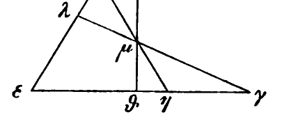

Proposition 138: Pappus Hexagon on Parallel Carriers¶
Synagoge Book VII, Proposition 138 (Hultsch II, pp. 884–886, Lemma XII to Euclid’s Porisms; App. IV, p. 1264)
In Proposition 138, Pappus proves the collinearity of opposite cross-joins for a hexagon whose vertices lie alternately on two parallel lines $a \parallel b$.
Proposition 138 (Pappus Hexagon on Parallel Lines): If two straight lines A0A2 and B0B2 are parallel, and upon them points A0, A1, A2 and B0, B1, B2 be taken, and their cross-joins A0B1 & A1B0, A0B2 & A2B0, A1B2 & A2B1 meet in points M01, M20, and M12, then these three points lie on a single straight line parallel to the original carrier lines.
step
Demonstration: By the similarity of alternate triangles formed by transversal rays cutting parallel lines $a \parallel b$, the height of each intersection point $M_{ij}$ above line $a$ is uniquely determined by the ratio of segments on the two parallel lines:
\[\frac{y(M_{ij})}{h - y(M_{ij})} = \frac{|A_i - A_j|}{|B_j - B_i|}.\]
step Through cross-multiplication of proportional segments, the vertical distance of all three intersection points from carrier line $a$ is identical, proving that the Pappus line is not merely straight, but is itself parallel to the two carriers.
Archival Plate (Hultsch Vol. III, Appendix IV, p. 1264)¶

